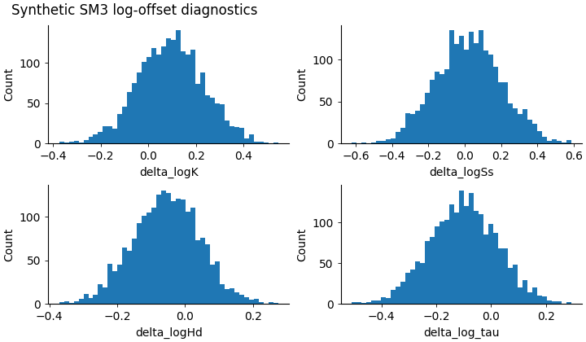
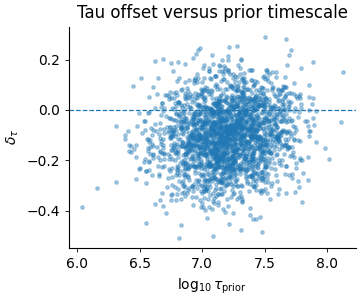

Note
Go to the end to download the full example code.
SM3 log offsets: learning where the inferred fields drift from their priors#
This example teaches you how to read the GeoPrior SM3 log-offset diagnostics.
The identifiability figures answer questions such as:
can the model recover tau?
does the recovery lie on a ridge?
are some regimes more identifiable than others?
This page answers a simpler but very important question:
How far did the inferred physics fields drift from their prior reference values?
That is what the log-offset figure is for.
What this figure shows#
The real script builds two diagnostics:
a 2×2 histogram grid for
delta_logKdelta_logSsdelta_logHddelta_log_tau
a small scatter plot of
\(\log_{10}(\tau_{prior})\)
versus
\(\delta_{\tau}\)
The offset variables are log10 differences. For example,
and similarly for \(S_s\), \(H_d\), and \(\tau\).
Why this matters#
A model can produce a plausible output while still leaning very far away from its prior field assumptions.
This is not automatically bad.
Sometimes the data genuinely force the model away from the prior. But large or asymmetric offset distributions are scientifically useful because they tell you:
whether the prior is being respected,
whether one field moves much more than the others,
whether the shifts are centered or biased,
and whether tau errors depend on the prior timescale itself.
This gallery page uses a compact synthetic payload so the example is fully executable during the documentation build.
Imports#
We use the real table-building helpers from the project script, then render the figures inline for the gallery page. This keeps the lesson faithful to the real implementation while making the page easy to read directly in Sphinx-Gallery.
from __future__ import annotations
import json
import tempfile
from pathlib import Path
import matplotlib.pyplot as plt
import numpy as np
import pandas as pd
from geoprior._scripts.plot_sm3_log_offsets import (
build_offsets_table,
summarise_offsets,
)
Step 1 - Build a compact synthetic payload#
The real helper build_offsets_table(...) expects a payload
containing at least:
tau
tau_prior (or tau_closure / tau_cl)
K
Ss
Hd (or H)
Optional prior fields can either be embedded directly in the payload or passed as scalar values.
For this lesson we build one synthetic payload with moderate, interpretable log-offset structure.
rng = np.random.default_rng(21)
n = 2200
# Prior fields
K_prior = 10.0 ** rng.normal(-6.0, 0.18, size=n)
Ss_prior = 10.0 ** rng.normal(-4.8, 0.14, size=n)
Hd_prior = np.clip(
rng.normal(24.0, 3.2, size=n),
10.0,
None,
)
tau_prior = 10.0 ** rng.normal(7.2, 0.28, size=n)
Step 2 - Create inferred fields with structured drift#
We deliberately give each field a different offset behavior:
K: modest positive shift
Ss: broader, near-centered spread
Hd: slight negative shift
tau: a weak dependence on tau_prior
This makes the final plots more instructive.
delta_logK = rng.normal(0.10, 0.14, size=n)
delta_logSs = rng.normal(0.02, 0.18, size=n)
delta_logHd = rng.normal(-0.06, 0.10, size=n)
# Slight trend in tau offset as prior tau changes.
log10_tau_prior = np.log10(tau_prior)
delta_log_tau = (
-0.10
+ 0.055 * (log10_tau_prior - log10_tau_prior.mean())
+ rng.normal(0.0, 0.12, size=n)
)
K = K_prior * (10.0 ** delta_logK)
Ss = Ss_prior * (10.0 ** delta_logSs)
Hd = Hd_prior * (10.0 ** delta_logHd)
tau = tau_prior * (10.0 ** delta_log_tau)
payload = {
"tau": tau,
"tau_prior": tau_prior,
"K": K,
"Ss": Ss,
"Hd": Hd,
"K_prior": K_prior,
"Ss_prior": Ss_prior,
"Hd_prior": Hd_prior,
}
Step 3 - Build the real offsets table#
This step uses the actual project helper. The resulting DataFrame contains the log10 fields and the delta columns used by the plotting script.
Offsets table preview
log10_tau log10_tau_prior delta_log_tau log10_K log10_Ss log10_Hd delta_logK delta_logSs delta_logHd index
7.113718 7.347759 -0.234041 -6.026014 -4.787441 1.301220 -0.090593 0.038428 -0.077375 0
6.855327 7.071883 -0.216556 -5.656304 -4.854660 1.364720 0.071774 -0.027880 -0.053342 1
6.653523 6.795939 -0.142416 -6.195542 -4.648502 1.396397 0.125997 0.058737 -0.062484 2
7.567744 7.648227 -0.080483 -5.647527 -4.830029 1.254697 0.048883 0.222461 -0.091329 3
7.466462 7.447990 0.018472 -5.971239 -4.428624 1.444985 0.037278 0.096232 0.190786 4
Step 4 - Build the summary table#
The real script also computes a compact summary over all
delta_* columns, including mean, standard deviation, and
selected quantiles.
summary = summarise_offsets(df)
print("")
print("Summary statistics")
print(summary.to_string())
Summary statistics
mean std p05 p50 p95
metric
delta_log_tau -0.100530 0.123340 -0.305061 -0.100968 0.100302
delta_logK 0.095150 0.138007 -0.125147 0.095374 0.322030
delta_logSs 0.020618 0.181670 -0.279201 0.022171 0.332641
delta_logHd -0.054620 0.098646 -0.218023 -0.053198 0.100148
Step 5 - Render the histogram figure#
The real script draws a 2×2 histogram grid for the four main delta columns.
In the gallery page we render the same logic inline so the image appears directly as part of the lesson.
delta_cols = [
"delta_logK",
"delta_logSs",
"delta_logHd",
"delta_log_tau",
]
fig = plt.figure(
figsize=(7.2, 4.2),
constrained_layout=True,
)
gs = fig.add_gridspec(2, 2)
for i, col in enumerate(delta_cols):
ax = fig.add_subplot(gs[i // 2, i % 2])
ax.spines["top"].set_visible(False)
ax.spines["right"].set_visible(False)
ax.tick_params(direction="out", length=3, width=0.6)
x = df[col].to_numpy(float)
x = x[np.isfinite(x)]
ax.hist(x, bins=45)
ax.set_xlabel(col)
ax.set_ylabel("Count")
fig.suptitle(
"Synthetic SM3 log-offset diagnostics",
x=0.02,
ha="left",
)

Text(0.02, 0.9900785714285715, 'Synthetic SM3 log-offset diagnostics')
Step 6 - Render the tau-offset scatter#
The second figure in the real script compares the prior tau scale against the tau offset.
This is useful because a centered histogram alone does not tell us whether the error depends on the regime.
fig2 = plt.figure(
figsize=(3.6, 3.0),
constrained_layout=True,
)
ax2 = fig2.add_subplot(1, 1, 1)
ax2.spines["top"].set_visible(False)
ax2.spines["right"].set_visible(False)
ax2.tick_params(direction="out", length=3, width=0.6)
ax2.scatter(
df["log10_tau_prior"],
df["delta_log_tau"],
s=6,
alpha=0.35,
rasterized=True,
)
ax2.axhline(0.0, linestyle="--", linewidth=0.9)
ax2.set_xlabel(r"$\log_{10}\tau_{\mathrm{prior}}$")
ax2.set_ylabel(r"$\delta_\tau$")
ax2.set_title("Tau offset versus prior timescale")

Text(0.5, 1.0, 'Tau offset versus prior timescale')
Step 7 - Read the summary like a scientist#
Let us compute one compact interpretation helper from the table:
which field is most shifted on average?
which field is most spread out?
mean_abs = (
summary["mean"]
.abs()
.sort_values(ascending=False)
)
spread = summary["std"].sort_values(ascending=False)
print("")
print("Largest mean offset")
print(mean_abs.to_string())
print("")
print("Largest spread")
print(spread.to_string())
Largest mean offset
metric
delta_log_tau 0.100530
delta_logK 0.095150
delta_logHd 0.054620
delta_logSs 0.020618
Largest spread
metric
delta_logSs 0.181670
delta_logK 0.138007
delta_log_tau 0.123340
delta_logHd 0.098646
Step 8 - Learn how to read the histogram panels#
A histogram panel answers three questions immediately.
Is the distribution centered near zero? If yes, the inferred field is not systematically pushed far above or below the prior.
Is it narrow or wide? A narrow histogram means the inferred field stays close to the prior for most samples. A wide one means the field is moving more aggressively.
Is it symmetric? If the mass is clearly shifted left or right, that suggests a systematic bias relative to the prior.
Interpreting the four offsets#
delta_logKMeasures how much inferred hydraulic conductivity moved away from its prior.
delta_logSsMeasures drift in specific storage.
delta_logHdMeasures drift in effective drainage thickness.
delta_log_tauMeasures drift in the relaxation timescale itself.
These four are useful together because they tell you whether the model is changing one field much more than the others.
Step 9 - Learn how to read the tau scatter#
The tau scatter answers a different question:
“Does the tau offset depend on the prior timescale regime?”
If the cloud is centered horizontally around zero with no visible slope, then the tau drift is roughly regime-neutral.
If the cloud trends upward or downward, then the prior timescale itself is influencing the direction of the inferred shift.
In this synthetic lesson we built a mild slope on purpose, so the page teaches that even when the tau histogram looks reasonable overall, there can still be a regime dependence.
Step 10 - Practical takeaway#
This figure is useful because it gives a fast, field-by-field explanation of prior drift.
It helps answer:
which inferred field moves the most?
is the movement centered or biased?
are the shifts moderate or very broad?
and does tau drift depend on the prior timescale itself?
In practice, this page is especially helpful after the main SM3 identifiability figures. The identifiability figures show whether recovery is stable. This page shows how the fields actually moved.
Command-line version#
The same diagnostics can be produced from the command line.
The real script supports:
--srcto auto-discover a physics payload under a run directory,--payloadfor an explicit NPZ / CSV / parquet payload,optional scalar priors through
--K-prior,--Ss-prior, and--Hd-prior,--binsand--dpi,--out-raw-csv,--out-summary-csv, and--out-json,plus the shared plot text arguments such as
--out,--show-title, and--title. :contentReference[oaicite:3]{index=3}
Legacy dispatcher:
python -m scripts plot-sm3-log-offsets \
--src results/sm3_synth_1d \
--bins 50 \
--out sm3-log-offsets
Explicit payload:
python -m scripts plot-sm3-log-offsets \
--payload results/.../physics_payload_run_val.npz \
--K-prior 1e-7 \
--Ss-prior 1e-5 \
--Hd-prior 40 \
--out sm3-log-offsets
Modern CLI:
geoprior plot sm3-log-offsets \
--payload results/.../physics_payload_run_val.npz \
--out sm3-log-offsets
The gallery page teaches the figure. The command line reproduces it in a workflow.
Total running time of the script: (0 minutes 2.094 seconds)